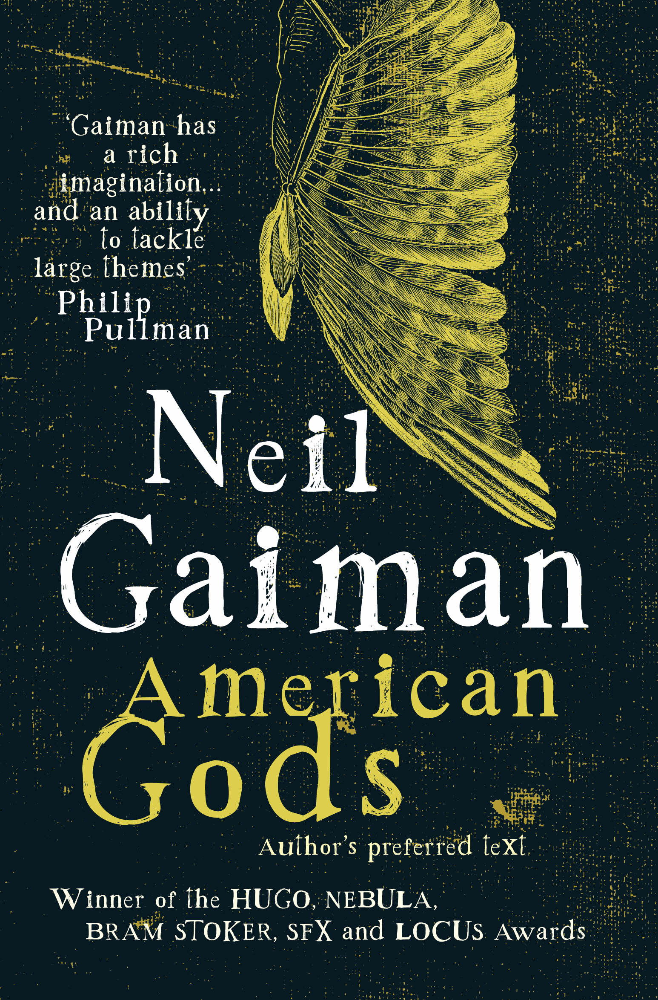
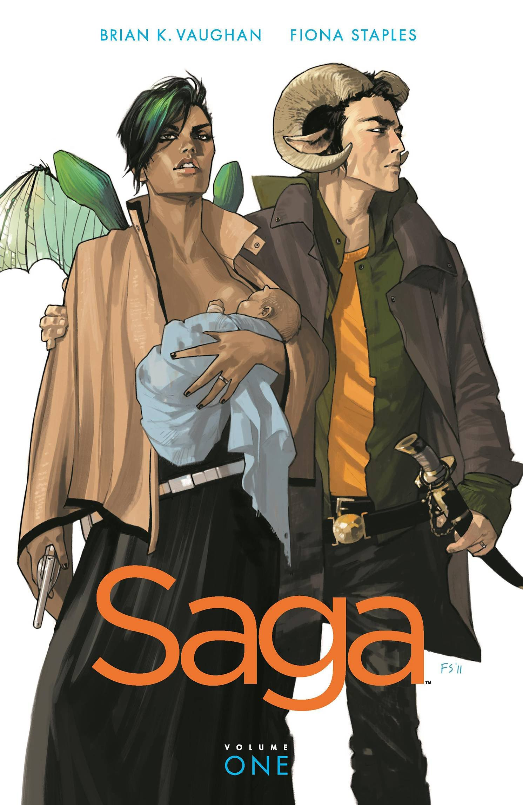

FAVORITE BOOKS

|
Kafka on the Shore by Haruki MurakamiKafka on the Shore is powered by two remarkable characters: a teenage boy, Kafka Tamura, who runs away from home either to escape a gruesome oedipal prophecy or to search for his long-missing mother and sister; and an aging simpleton called Nakata, who never recovered from a wartime affliction and now is drawn toward Kafka for reasons that, like the most basic activities of daily life, he cannot fathom. As their paths converge, and the reasons for that convergence become clear, Haruki Murakami enfolds readers in a world where cats talk, fish fall from the sky, and spirits slip out of their bodies to make love or commit murder. Kafka on the Shore displays one of the world’s great storytellers at the peak of his powers. |
|  |
American Gods by Neil GaimanReleased from prison, Shadow finds his world turned upside down. His wife has been killed; a mysterious stranger offers him a job. But Mr. Wednesday, who knows more about Shadow than is possible, warns that a storm is coming -- a battle for the very soul of America . . . and they are in its direct path. |
|  |
Saga by Brian K. VaughnWhen two soldiers from opposite sides of a never-ending galactic war fall in love, they risk everything to bring a fragile new life into a dangerous old universe. From bestselling writer Brian K. Vaughan, Saga is the sweeping tale of one young family fighting to find their place in the worlds. Fantasy and science fiction are wed like never before in this sexy, subversive drama for adults. |